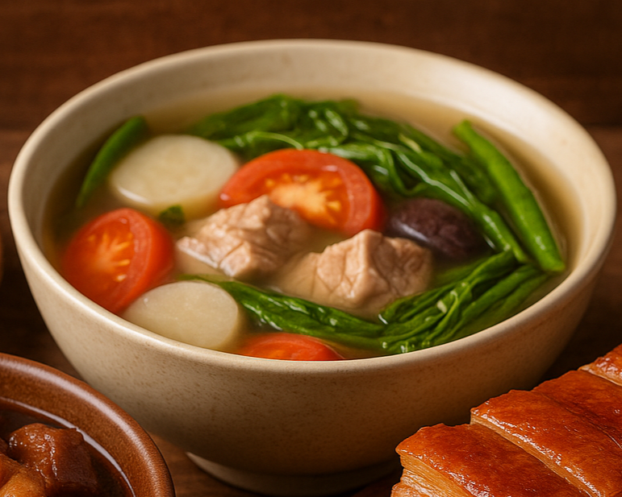

← Back to Home
Sinigang

A tangy, savory soup that’s deeply comforting—especially on rainy
days.
Sinigang is known for its sour and savory broth, often made with tamarind,
tomatoes, and a variety of vegetables. It can be cooked with pork, shrimp,
fish, or beef.
Ingredients:
- 1 kg pork belly or ribs
- 1 medium onion, quartered
- 2 tomatoes, quartered
- 1 pack tamarind soup base (or fresh tamarind if available)
- 1 radish, sliced
- 1 eggplant, sliced
- 1 bunch kangkong (water spinach)
- 2 long green chilies (optional)
- Fish sauce and salt to taste
- 6 cups water
Steps:
- In a pot, boil pork until tender. Skim off scum.
- Add onions and tomatoes, simmer for 10 minutes.
- Add sinigang mix or fresh tamarind juice. Simmer.
- Add radish and eggplant, cook for 5 minutes.
- Add kangkong and green chilies, cook for 2 minutes more.
- Season with fish sauce or salt. Serve hot with rice.
← Back to Home